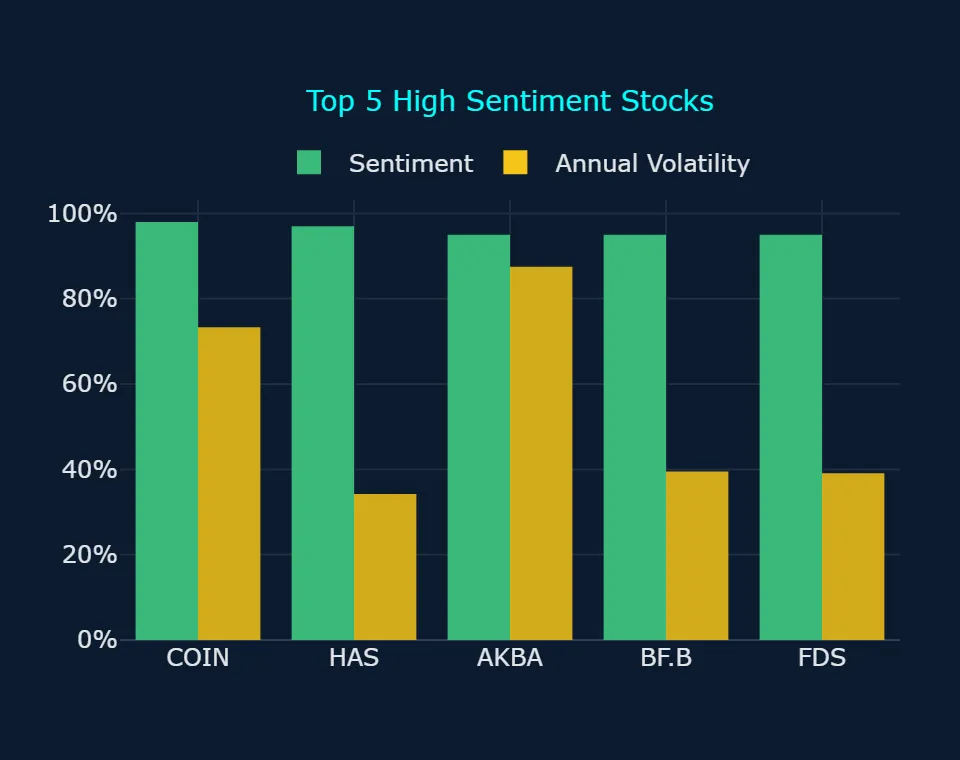
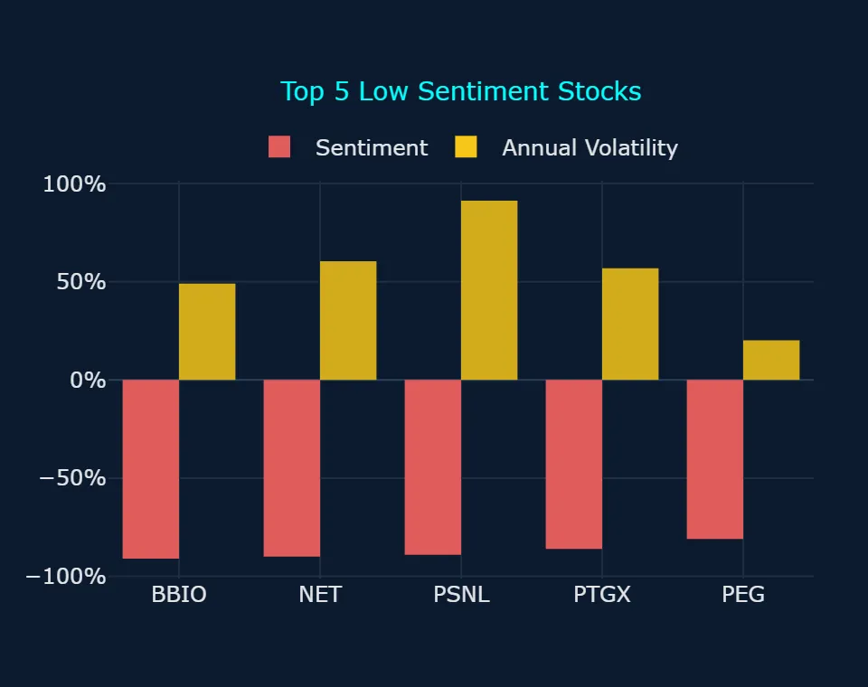
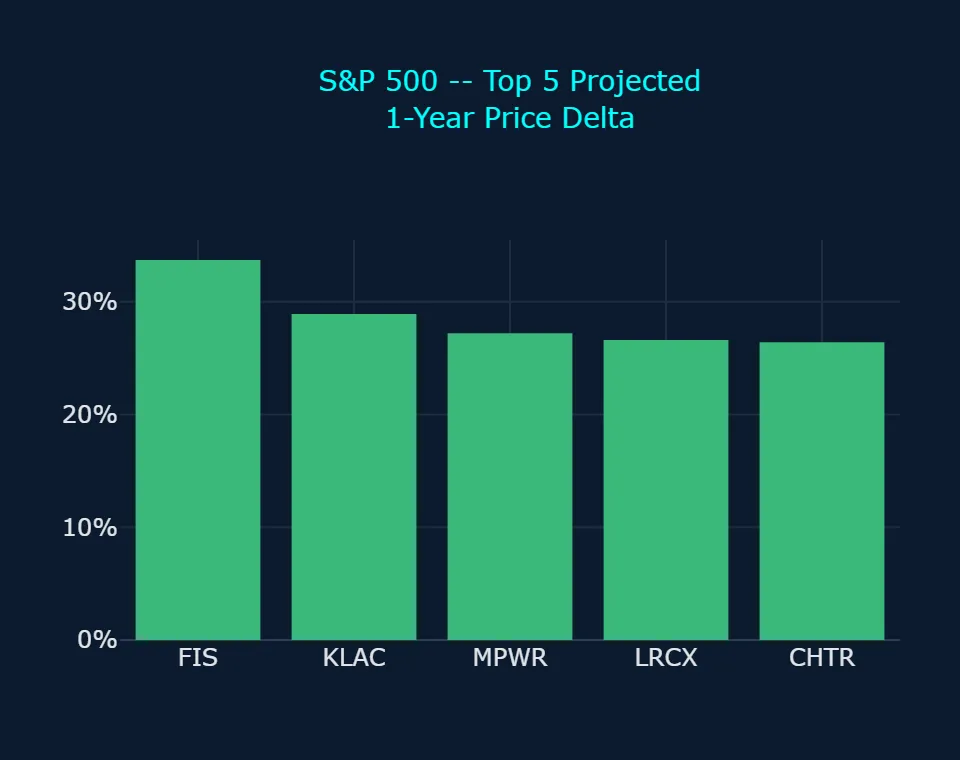
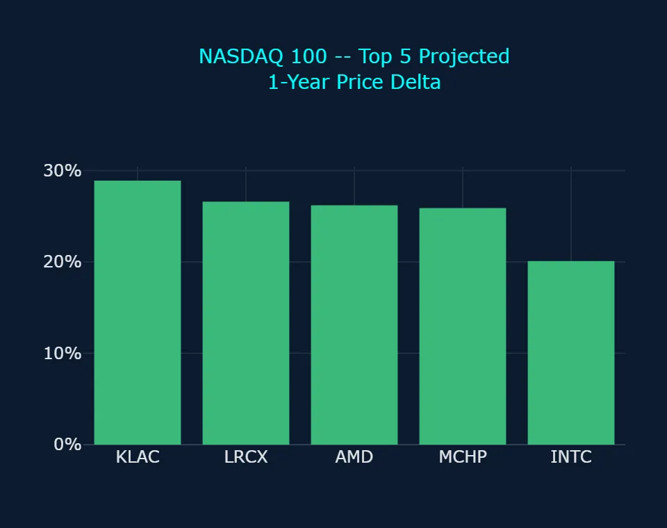
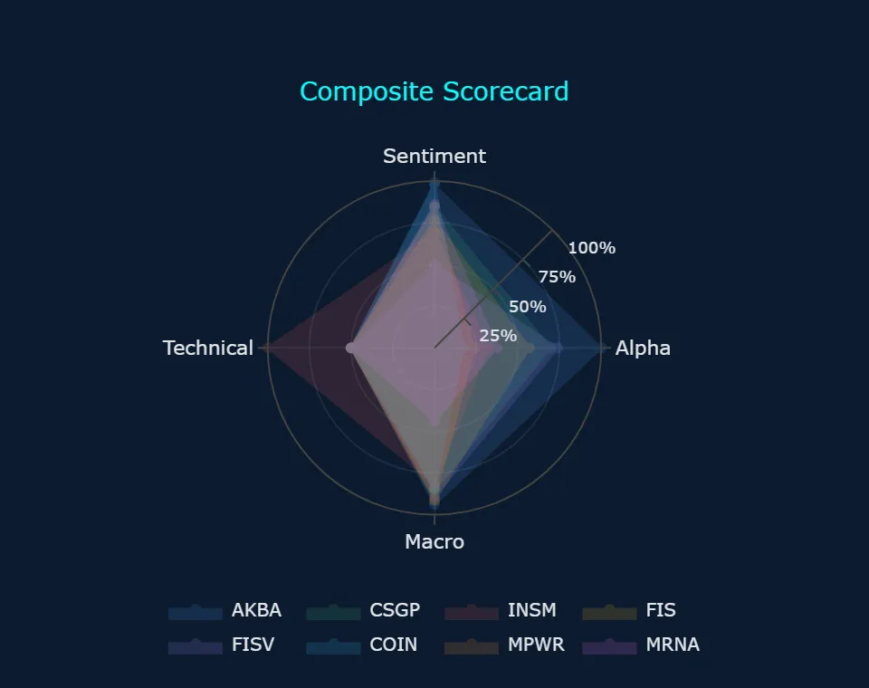
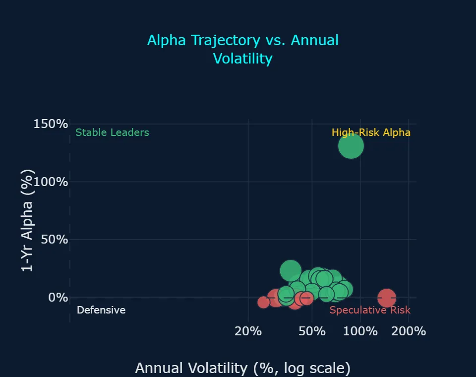
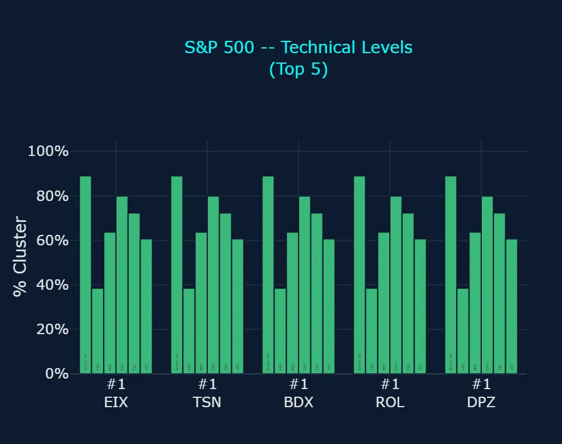
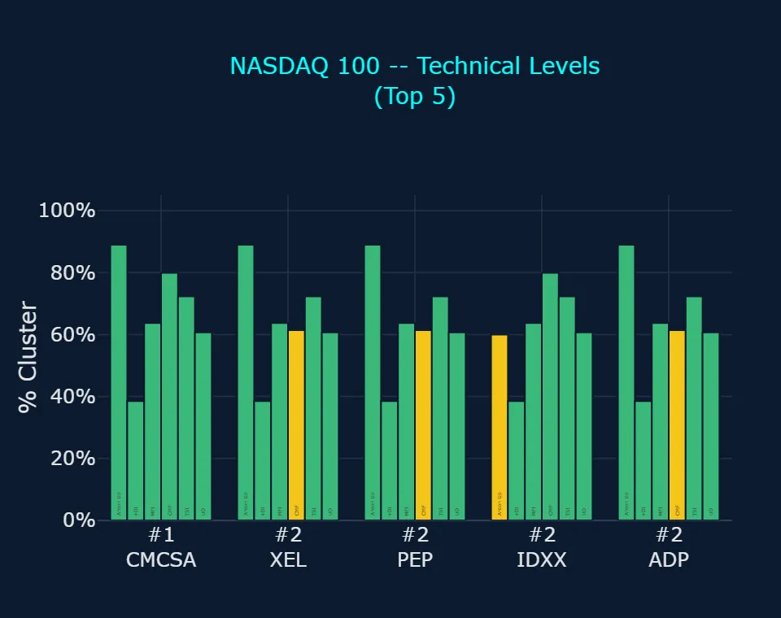
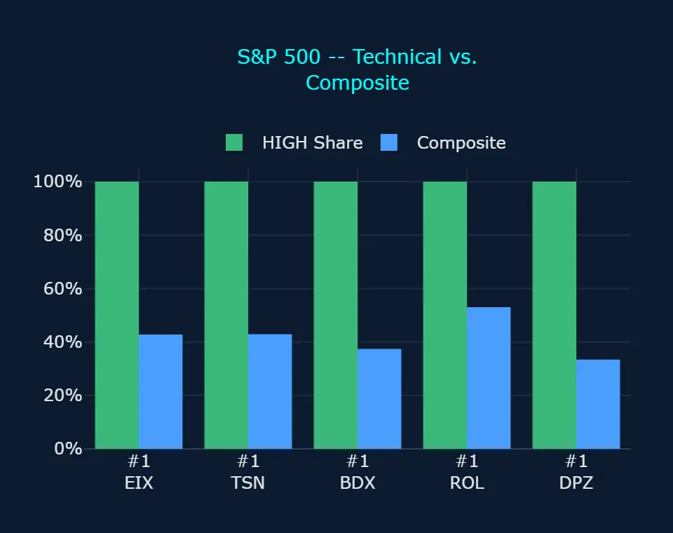
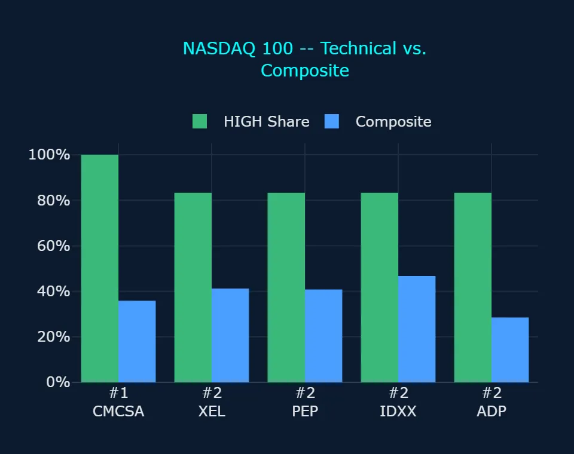

Zoonova AI: Pre-Market Quantitative Briefing – November 20, 2026
Session Quantitative Briefing: The Zoonova AI Intelligence Engine executes a hybrid architecture combining a proprietary Quad-Ensemble machine learning framework with Google Gemini Flash for real-time contextual synthesis and semantic macroeconomic grounding. The quantitative pipeline integrates four specialized estimators: Random Forest Regressor (RFR) for baseline structural stability, eXtreme Gradient Boosting (XGB) optimized for residual loss minimization, Categorical Boosting (CAT) for high-cardinality categorical signal processing, and Temporal Fusion Transformer (TFT) for multi-horizon price and volatility forecasting.
Zoonova AI: Pre-Market Momentum & Liquidity Report
1. QUANTITATIVE MODEL OVERVIEW & SIGNAL METRICS
This report synthesizes predictive analytics from Zoonova's Quad-Ensemble machine learning framework, which integrates Random Forest Regressor [RFR], eXtreme Gradient Boosting [XGB], Categorical Boosting [CAT], and Temporal Fusion Transformer [TFT] algorithms to project multi-horizon price targets and alpha probabilities. Market psychology and news sentiment are derived via VADER sentiment scoring, while BIRCH clustering evaluates market breadth and registers structural price anomalies across equity and ETF assets.
- SPDR S&P 500 ETF Trust (SPY) closed at $715.87 on 2026-11-19 (Zoonova, 2026-11-19) with a negative sentiment score of -44.0% and annualized volatility of 16.99%, while the Quad-Ensemble model projects a 1-year target price of $792.98, reflecting an implied gain of 10.8% (Zoonova, 2026-11-19).
- Invesco QQQ Trust Series 1 (QQQ) closed at $645.04 on 2026-11-19 (Zoonova, 2026-11-19) with positive sentiment of +56.0% and annualized volatility of 22.73%, carrying a projected 1-year target price of $702.63 that indicates an implied increase of 8.9% (Zoonova, 2026-11-19).
- SPDR Dow Jones Industrial Average ETF (DIA) closed at $490.79 on 2026-11-19 (Zoonova, 2026-11-19) with neutral sentiment of 0.0% and annualized volatility of 15.36%, accompanied by a projected 1-year price of $522.45 pointing to an implied gain of 6.5% (Zoonova, 2026-11-19).
- Vanguard Total Bond Market ETF (BND) closed at $70.91 on 2026-11-19 (Zoonova, 2026-11-19) showing highly defensive sentiment of +93.0% and low annualized volatility of 4.42%, with a 1-year projected price of $76.87 representing an implied advance of 8.4% (Zoonova, 2026-11-19).
- Market breadth exhibits severe systemic stress as BIRCH clustering confirmed bearish anomalies across 79 names: 44 stocks, 35 ETFs at low severity, while only 4 stocks registered moderate severity bullish anomalies (Zoonova, 2026-11-19).
2. SENTIMENT INSIGHTS – TOP 5 HIGH & LOW
Top 5 High Sentiment Stocks
| Ticker | Company Name | Sentiment Score | Primary Catalyst / Driver |
|---|---|---|---|
| COIN | Coinbase Global Inc | +98.0% | Coinbase Global Inc is advancing plans to launch internally operated prediction market event contracts for retail and institutional clients in the first half of 2027 to diversify beyond volatile spot crypto trading (CCN.com, 2026-11-20). |
| HAS | Hasbro, Inc. | +97.0% | Hasbro, Inc. declared its regular quarterly cash dividend of $0.70 per share while advancing operational reorganizations to enhance product development speed ahead of the holiday shopping cycle (Barchart.com, 2026-11-20). |
| AKBA (Micro-Cap) | Akebia Therapeutics Inc. | +95.0% | Akebia Therapeutics Inc. secured a senior secured term loan facility worth up to $140 million from Symbiotic Capital and was granted an additional patent for Vafseo (TipRanks, 2026-11-17). |
| BF.B | Brown-Forman Corp. | +95.0% | Brown-Forman Corp. raised its quarterly cash dividend by 2% to $0.2356 per share, marking 43 consecutive years of dividend increases (Brown-Forman Corporation, 2026-11-18). |
| FDS | Factset Research Systems Inc. | +95.0% | Factset Research Systems Inc. hosted its 2026 Investor Day, outlining fiscal 2029 targets of 10% adjusted diluted EPS compound growth and reaffirming its fiscal 2027 revenue guidance (FactSet, 2026-11-10). |
Top 5 Low Sentiment Stocks
| Ticker | Company Name | Sentiment Score | Primary Friction / Risk Factor |
|---|---|---|---|
| BBIO | BridgeBio Pharma Inc | -91.0% | BridgeBio Pharma Inc faced negative sentiment following executive Form 144 filings and insider share withholdings that heightened concerns over near-term liquidity (Stock Titan, 2026-11-19). |
| NET | Cloudflare Inc | -90.0% | Cloudflare Inc experienced sentiment pressure after management cautioned investors at an industry conference not to expect a repeat of its third-quarter earnings outperformance (Trefis, 2026-11-19). |
| PSNL | Personalis Inc | -89.0% | Personalis Inc was weighed down by a wave of shareholder litigation investigations into whether its pending $16.25 per share acquisition by Tempus AI undervalues the company (PR Newswire, 2026-11-20). |
| PTGX | Protagonist Therapeutics Inc | -86.0% | Protagonist Therapeutics Inc saw investor sentiment depressed by extensive insider share sales totaling tens of millions of dollars over recent months (Investing.com UK, 2026-11-18). |
| PEG | Public Service Enterprise Group Inc. | -81.0% | Public Service Enterprise Group Inc. encountered negative sentiment after third-quarter results reflected severe storm costs and margin compression in its core utility business (PSEG, 2026-11-02). |
3. ALPHA PROBABILITY & PRICE DELTA LEADERBOARD – 1-YEAR HORIZON
S&P 500 – Top 5 High Alpha Probability (1yr)
| Ticker | Prev Close 2026-11-19 ($) | 1-Yr Target Price ($) | Alpha Probability (%) | Implied Excess Alpha (%) | 10%+ Alpha? |
|---|---|---|---|---|---|
| FISV | $56.62 | $70.41 | 62.20% | 13.58% | Both Yes |
| CSGP | $28.70 | $34.73 | 58.46% | 10.27% | Both Yes |
| CPRT | $30.86 | $33.95 | 50.43% | -0.74% | Split |
| BSX | $42.99 | $47.77 | 48.47% | 0.34% | Both No |
| FIS | $25.94 | $34.69 | 48.00% | 22.96% | Split |
S&P 500 – Top 5 Price Delta + % Change (1yr)
| Ticker | Prev Close 2026-11-19 ($) | 1-Yr Target Price ($) | Absolute Delta ($) | Projected 1-Yr % Change (%) | Implied Excess Alpha (%) |
|---|---|---|---|---|---|
| FIS | $25.94 | $34.69 | $8.75 | 33.73% | 22.96% |
| KLAC | $141.48 | $182.36 | $40.88 | 28.89% | 18.12% |
| MPWR | $1,295.86 | $1,648.27 | $352.41 | 27.20% | 16.43% |
| LRCX | $203.68 | $257.95 | $54.27 | 26.64% | 15.88% |
| CHTR | $133.18 | $168.31 | $35.13 | 26.38% | 15.61% |
NASDAQ 100 – Top 5 High Alpha Probability (1yr)
| Ticker | Prev Close 2026-11-19 ($) | 1-Yr Target Price ($) | Alpha Probability (%) | Implied Excess Alpha (%) | 10%+ Alpha? |
|---|---|---|---|---|---|
| CPRT | $30.86 | $33.95 | 50.43% | -0.74% | Split |
| DXCM | $80.19 | $89.80 | 34.79% | 1.21% | Both No |
| MRNA | $199.33 | $219.31 | 31.59% | -0.75% | Both No |
| NFLX | $58.46 | $64.60 | 26.73% | -0.26% | Both No |
| MRVL | $138.47 | $162.92 | 19.44% | 6.88% | Both No |
NASDAQ 100 – Top 5 Price Delta + % Change (1yr)
| Ticker | Prev Close 2026-11-19 ($) | 1-Yr Target Price ($) | Absolute Delta ($) | Projected 1-Yr % Change (%) | Implied Excess Alpha (%) |
|---|---|---|---|---|---|
| KLAC | $141.48 | $182.36 | $40.88 | 28.89% | 18.12% |
| LRCX | $203.68 | $257.95 | $54.27 | 26.64% | 15.88% |
| AMD | $489.19 | $617.37 | $128.18 | 26.20% | 15.43% |
| MCHP | $58.47 | $73.63 | $15.16 | 25.93% | 15.16% |
| INTC | $55.72 | $66.91 | $11.19 | 20.08% | 9.32% |
4. REAL-TIME CONTEXTUAL ENRICHMENT
Equity markets faced sharp downward momentum on 2026-11-19 as the S&P 500 dropped 2.02% to close at 7,175.83, marking its sixth consecutive session of declines, while the Dow Jones Industrial Average dropped 2.19%. Market sentiment deteriorated rapidly after Federal Reserve meeting minutes revealed that several policymakers favor higher interest rates heading into December 2026 to combat persistent inflation pressures, pushing the 10-year Treasury yield to 5.07%. In response, SPDR S&P 500 ETF Trust (SPY) closed at $715.87 on 2026-11-19 (Zoonova, 2026-11-19) with a negative sentiment score of -44.0%, while Invesco QQQ Trust Series 1 (QQQ) closed at $645.04 on 2026-11-19 (Zoonova, 2026-11-19) with sentiment of +56.0%. This rate-sensitive repricing confirmed the bearish shift registered by Zoonova BIRCH clustering, which flagged low severity bearish trend anomalies across 79 names: 44 stocks, 35 ETFs, including SPY (ETF), DIA (ETF), and GLD (ETF) (Zoonova, 2026-11-19).
Despite broad market weakness, select financial technology equities demonstrate strong predictive resilience. In the S&P 500 Alpha Probability rankings, Fiserv, Inc. (FISV) holds the top position with a 62.20% probability of clearing the 10%+ alpha hurdle and an implied 1-year alpha of +13.58%, where both models expect it to beat the benchmark by 10%+ from its close at $56.62 on 2026-11-19 to a projected 1-year price of $70.41 (Zoonova, 2026-11-19). FISV previously rallied on earnings after doubling its Project Elevate cost-reduction target to $1 billion. Similarly, CoStar Group, Inc. (CSGP) closed at $28.70 on 2026-11-19 with a 1-year price target of $34.73 and implied 1-year alpha of +10.27%, where both models expect 10%+ outperformance, supported by an Alpha Rating of 69.4 and Macro Alignment of 85.2 in the Main Scorecard (Zoonova, 2026-11-19). In contrast, the Tech Stock Scorecard indicates significant headwinds for mega-cap technology. Advanced Micro Devices Inc. (AMD) closed at $489.19 on 2026-11-19 (Zoonova, 2026-11-19) with a Composite of 31.7, where the two models split on exceeding 10%+ alpha, constrained by a Technical Signal of 0.0 and moderate severity bearish trend anomalies across both 3-day and 1-week horizons (Zoonova, 2026-11-19).
5. ANOMALY DETECTION SCANNER
Direction: Bearish
Moderate Severity (7 stocks)
- AMD – Advanced Micro Devices Inc.: Bearish Short-Term (3d) Trend Anomaly, Bearish Long-Term (1w) Trend Anomaly
- LGND – Ligand Pharmaceuticals, Inc.: Bearish Short-Term (3d) Trend Anomaly, Bearish Long-Term (1w) Trend Anomaly
- MRK – Merck & Co Inc: Bearish Short-Term (3d) Trend Anomaly, Bearish Long-Term (1w) Trend Anomaly
- TPR – Tapestry Inc: Bearish Short-Term (3d) Trend Anomaly, Bearish Long-Term (1w) Trend Anomaly
- TWLO – Twilio Inc: Bearish Short-Term (3d) Trend Anomaly, Bearish Long-Term (1w) Trend Anomaly
- UHS – Universal Health Services, Inc.: Bearish Short-Term (3d) Trend Anomaly, Bearish Long-Term (1w) Trend Anomaly
- WAB – Westinghouse Air Brake Technologies Corp: Bearish Short-Term (3d) Trend Anomaly, Bearish Long-Term (1w) Trend Anomaly
Low Severity (79 names: 44 stocks, 35 ETFs)
- ACWI* – iShares MSCI ACWI ETF: Bearish Long-Term (1w) Trend Anomaly
- AMAT – Applied Materials Inc.: Bearish Long-Term (1w) Trend Anomaly
- ARKQ* – ARK Autonomous Technology & Robotics ETF: Bearish Long-Term (1w) Trend Anomaly
- ASML – ASML Holding NV: Bearish Long-Term (1w) Trend Anomaly
- CAT – Caterpillar Inc.: Bearish Long-Term (1w) Trend Anomaly
- CDE – Coeur Mining Inc: Bearish Long-Term (1w) Trend Anomaly
- CMI – Cummins Inc.: Bearish Long-Term (1w) Trend Anomaly
- CVS – CVS Health Corp: Bearish Long-Term (1w) Trend Anomaly
- DE – Deere & Co.: Bearish Long-Term (1w) Trend Anomaly
- DIA* – SPDR Dow Jones Industrial Average ETF: Bearish Long-Term (1w) Trend Anomaly
- DVA – DaVita Inc: Bearish Long-Term (1w) Trend Anomaly
- EBAY – EBay Inc.: Bearish Short-Term (3d) Trend Anomaly
- EEM* – iShares MSCI Emerging Markets ETF: Bearish Long-Term (1w) Trend Anomaly
- EFA* – iShares MSCI EAFE ETF: Bearish Long-Term (1w) Trend Anomaly
- ESGU* – iShares Trust iShares ESG Aware MSCI USA ETF: Bearish Long-Term (1w) Trend Anomaly
- ETR – Entergy Corp.: Bearish Long-Term (1w) Trend Anomaly
- EXEL – Exelixis Inc: Bearish Short-Term (3d) Trend Anomaly
- FCX – Freeport-McMoRan Inc: Bearish Long-Term (1w) Trend Anomaly
- GDX* – VanEck Gold Miners ETF: Bearish Long-Term (1w) Trend Anomaly
- GLD* – SPDR Gold Shares ETF: Bearish Long-Term (1w) Trend Anomaly
- GS – Goldman Sachs Group, Inc.: Bearish Long-Term (1w) Trend Anomaly
- HCA – HCA Healthcare Inc: Bearish Long-Term (1w) Trend Anomaly
- HUM – Humana Inc.: Bearish Long-Term (1w) Trend Anomaly
- IAU* – iShares Gold Trust: Bearish Long-Term (1w) Trend Anomaly
- IBM – International Business Machines Corp.: Bearish Long-Term (1w) Trend Anomaly
- IDYA – Ideaya Biosciences Inc: Bearish Long-Term (1w) Trend Anomaly
- IEFA* – iShares Core MSCI EAFE ETF: Bearish Long-Term (1w) Trend Anomaly
- IEMG* – iShares Core MSCI Emerging Markets ETF: Bearish Long-Term (1w) Trend Anomaly
- ITOT* – iShares Core S&P Total U.S. Stock Market ETF: Bearish Long-Term (1w) Trend Anomaly
- IVV* – iShares Core S&P 500 ETF: Bearish Long-Term (1w) Trend Anomaly
- IVW* – iShares S&P 500 Growth ETF: Bearish Long-Term (1w) Trend Anomaly
- IWB* – iShares Russell 1000 ETF: Bearish Long-Term (1w) Trend Anomaly
- IWR* – iShares Russell Mid-Cap ETF: Bearish Long-Term (1w) Trend Anomaly
- IXUS* – iShares Core MSCI Total International Stock ETF: Bearish Long-Term (1w) Trend Anomaly
- JPM – JPMorgan Chase & Co.: Bearish Long-Term (1w) Trend Anomaly
- LRCX – Lam Research Corp.: Bearish Long-Term (1w) Trend Anomaly
- MPC – Marathon Petroleum Corp: Bearish Long-Term (1w) Trend Anomaly
- MS – Morgan Stanley: Bearish Long-Term (1w) Trend Anomaly
- MU – Micron Technology Inc.: Bearish Long-Term (1w) Trend Anomaly
- NEM – Newmont Corp: Bearish Long-Term (1w) Trend Anomaly
- NTRA – Natera Inc: Bearish Long-Term (1w) Trend Anomaly
- NTRS – Northern Trust Corp.: Bearish Long-Term (1w) Trend Anomaly
- NVS – Novartis AG: Bearish Long-Term (1w) Trend Anomaly
- OMER – Omeros Corporation: Bearish Long-Term (1w) Trend Anomaly
- PLTR – Palantir Technologies Inc: Bearish Long-Term (1w) Trend Anomaly
- PM – Philip Morris International Inc: Bearish Short-Term (3d) Trend Anomaly
- PSX – Phillips 66: Bearish Long-Term (1w) Trend Anomaly
- PZG – Paramount Gold Nevada Corp: Bearish Short-Term (3d) Trend Anomaly
- RCL – Royal Caribbean Group: Bearish Short-Term (3d) Trend Anomaly
- ROST – Ross Stores, Inc.: Bearish Short-Term (3d) Trend Anomaly
- RSP* – Invesco S&P 500 Equal Weight ETF: Bearish Long-Term (1w) Trend Anomaly
- RVMD – Revolution Medicines Inc: Bearish Long-Term (1w) Trend Anomaly
- SCCO – Southern Copper Corporation: Bearish Long-Term (1w) Trend Anomaly
- SCHB* – Schwab U.S. Broad Market ETF: Bearish Long-Term (1w) Trend Anomaly
- SCHF* – Schwab International Equity ETF: Bearish Long-Term (1w) Trend Anomaly
- SCHX* – Schwab U.S. Large-Cap ETF: Bearish Long-Term (1w) Trend Anomaly
- SPY* – SPDR S&P 500 ETF Trust: Bearish Long-Term (1w) Trend Anomaly
- SPYG* – State Street SPDR Portfolio S&P 500 Growth ETF: Bearish Long-Term (1w) Trend Anomaly
- STT – State Street Corp.: Bearish Long-Term (1w) Trend Anomaly
- UNH – Unitedhealth Group Inc: Bearish Long-Term (1w) Trend Anomaly
- UNP – Union Pacific Corp.: Bearish Short-Term (3d) Trend Anomaly
- UTHR – United Therapeutics Corp: Bearish Short-Term (3d) Trend Anomaly
- V – Visa Inc: Bearish Short-Term (3d) Trend Anomaly
- VEA* – Vanguard FTSE Developed Markets ETF: Bearish Long-Term (1w) Trend Anomaly
- VEEV – Veeva Systems Inc: Bearish Long-Term (1w) Trend Anomaly
- VEU* – Vanguard FTSE All-World ex-US ETF: Bearish Long-Term (1w) Trend Anomaly
- VGK* – Vanguard FTSE Europe ETF: Bearish Long-Term (1w) Trend Anomaly
- VGZ – Vista Gold Corp.: Bearish Long-Term (1w) Trend Anomaly
- VLO – Valero Energy Corp.: Bearish Long-Term (1w) Trend Anomaly
- VLUE* – iShares MSCI USA Value Factor ETF: Bearish Long-Term (1w) Trend Anomaly
- VOO* – Vanguard S&P 500 ETF: Bearish Long-Term (1w) Trend Anomaly
- VT* – Vanguard Total World Stock ETF: Bearish Long-Term (1w) Trend Anomaly
- VTI* – Vanguard Total Stock Market ETF: Bearish Long-Term (1w) Trend Anomaly
- VTV* – Vanguard Value ETF: Bearish Long-Term (1w) Trend Anomaly
- VV* – Vanguard Large Cap ETF: Bearish Long-Term (1w) Trend Anomaly
- VWO* – Vanguard FTSE Emerging Markets ETF: Bearish Long-Term (1w) Trend Anomaly
- VXUS* – Vanguard Total International Stock ETF: Bearish Long-Term (1w) Trend Anomaly
- VYM* – Vanguard High Dividend Yield Indx ETF: Bearish Long-Term (1w) Trend Anomaly
- ZM – Zoom Communications Inc.: Bearish Short-Term (3d) Trend Anomaly
Direction: Bullish
Moderate Severity (4 stocks)
- INSM – Insmed Inc: Bullish Short-Term (3d) Trend Anomaly, Bullish Long-Term (1w) Trend Anomaly
- OKTA – Okta Inc: Bullish Short-Term (3d) Trend Anomaly, Bullish Long-Term (1w) Trend Anomaly
- PANW – Palo Alto Networks Inc: Bullish Short-Term (3d) Trend Anomaly, Bullish Long-Term (1w) Trend Anomaly
- URGN – UroGen Pharma Ltd: Bullish Short-Term (3d) Trend Anomaly, Bullish Long-Term (1w) Trend Anomaly
Low Severity (2 stocks)
- CRWD – Crowdstrike Holdings Inc: Bullish Long-Term (1w) Trend Anomaly
- WDC – Western Digital Corp.: Bullish Short-Term (3d) Trend Anomaly
* ETF (exchange-traded fund)
6. STRATEGIC INVESTMENT ASSESSMENT
- Exercise defensive portfolio positioning in response to deteriorating market breadth, as confirmed by BIRCH clustering registering low severity bearish anomalies across 79 names: 44 stocks, 35 ETFs, alongside moderate severity bearish trend anomalies across 7 stocks (Zoonova, 2026-11-19).
- Prioritize high-conviction financial technology names identified in the Main Scorecard where both models expect 10%+ benchmark outperformance, most notably Fiserv, Inc. (FISV) with an alpha probability of 62.20% and CoStar Group, Inc. (CSGP) with an alpha probability of 58.46% (Zoonova, 2026-11-19).
- Reduce allocation to high-beta mega-cap technology issues tracked in the Tech Stock Scorecard, where entities such as Advanced Micro Devices Inc. (AMD) (Composite 31.7), Apple Inc. (AAPL) (Composite 27.1), and Alphabet Inc. (GOOGL) (Composite 26.8) reflect low Alpha Ratings below 10.0 and active bearish anomaly flags (Zoonova, 2026-11-19).
- Utilize high-sentiment fixed income instruments as portfolio ballast, as Vanguard Total Bond Market ETF (BND) closed at $70.91 on 2026-11-19 (Zoonova, 2026-11-19) with sentiment of +93.0% and low annualized volatility of 4.42%, providing downside insulation against benchmark equity volatility (Zoonova, 2026-11-19).
7. STOCK SCORECARD
Main Scorecard
| Ticker | Composite (%) | Alpha Rating | 10%+ Alpha? | Projected 1-Yr Change (%) | Street Consensus (Upside) | Next Earnings | Sentiment Rating | Technical Signal | Macro Alignment | Anomaly Flag | Catalyst / Risk | Market Cap | EPS Revisions (30d) | Short Interest / DTC | Options Flow | Earnings Surprise (4Q) | Bias |
|---|---|---|---|---|---|---|---|---|---|---|---|---|---|---|---|---|---|
| AKBA | 85.7% | 100.0 | Both Yes | +142.9% | Hold | 2027-03-25 | 97.5 | 50.0 | 93.9 | None | Patent Protection Extension | $113.5M | Downward (-8.2%) | 8.2% / 3.5 DTC | Neutral / Mixed | 2/4 Beats | Bullish |
| CSGP | 71.5% | 69.4 | Both Yes | +21.0% | Buy (+25.6%) | 2027-02-23 | 84.5 | 50.0 | 85.2 | None | Commercial Bookings Recovery | $12.0B | Downward (-4.5%) | 3.1% / 3.2 DTC | Neutral / Mixed | 4/4 Beats (+5.4% avg) | Bullish |
| INSM | 68.3% | 32.0 | Both No | +19.0% | Buy (+36.0%) | 2027-02-23 | 69.5 | 100.0 | 81.5 | Bullish (3d/1w) | Takeover Approach Reports | $31.7B | Upward (+12.4%) | 5.4% / 4.2 DTC | Bullish (Call Skew) | 2/4 Beats | Bullish |
| FIS | 67.0% | 56.9 | Split | +33.7% | Hold (+31.1%) | 2027-02-16 | 76.5 | 50.0 | 91.7 | None | Executive Leadership Transition | $13.4B | Downward (-7.8%) | 4.1% / 3.6 DTC | Neutral / Mixed | 3/4 Beats | Bullish |
| FISV | 65.0% | 73.8 | Both Yes | +24.4% | Hold (+17.0%) | 2027-02-09 | 50.0 | 50.0 | 89.2 | None | Merchant Payment Processing | $30.1B | Neutral/Flat (0.0%) | 5.2% / 3.8 DTC | Neutral / Mixed | 3/4 Beats | Bullish |
| COIN | 59.2% | 17.1 | Both No | +20.4% | Hold (+91.0%) | 2027-02-11 | 99.0 | 50.0 | 84.1 | None | Prediction Market Expansion | $28.5B | Downward (-6.4%) | 6.2% / 2.8 DTC | Neutral / Mixed | 2/4 Beats | Neutral |
| MPWR | 58.9% | 23.7 | Split | +27.2% | Strong Buy (+39.9%) | 2027-01-28 | 84.5 | 50.0 | 90.9 | None | Enterprise Power Management | $63.9B | Upward (+5.6%) | 3.3% / 2.0 DTC | Bullish (Call Skew) | 4/4 Beats (+4.8% avg) | Neutral |
| MRNA | 54.0% | 37.5 | Both No | +10.0% | Hold (-17.5%) | 2027-02-25 | 86.0 | 50.0 | 43.9 | None | Pipeline Portfolio Restructuring | $79.7B | Downward (-4.1%) | 9.8% / 4.1 DTC | Bearish (Put Heavy) | 2/4 Beats | Neutral |
| BSX | 53.0% | 57.5 | Both No | +11.1% | Buy (+42.9%) | 2027-01-27 | 50.0 | 50.0 | 53.8 | None | Cardiology Device Growth | $63.3B | Downward (-3.2%) | 2.4% / 1.9 DTC | Neutral / Mixed | 3/4 Beats | Neutral |
| CHTR | 52.6% | 31.7 | Split | +26.4% | Hold (+18.1%) | 2027-02-05 | 50.0 | 50.0 | 90.6 | None | Debt Refinancing Tenders | $23.3B | Downward (-2.8%) | 10.9% / 6.5 DTC | Neutral / Mixed | 3/4 Beats | Neutral |
| DXCM | 52.2% | 41.3 | Both No | +12.0% | Buy (+12.2%) | 2027-02-11 | 63.5 | 50.0 | 57.4 | None | Biosensor Sensor Rollout | $29.9B | Upward (+4.2%) | 4.2% / 3.9 DTC | Bullish (Call Skew) | 4/4 Beats (+6.1% avg) | Neutral |
| CPRT | 51.8% | 59.8 | Split | +10.0% | Buy (+18.7%) | 2026-11-23 (in 3d) | 50.0 | 50.0 | 44.1 | None | Vehicle Auction Volume | $28.9B | Downward (-1.8%) | 4.5% / 3.6 DTC | Neutral / Mixed | 2/4 Beats | Neutral |
| PZG | 51.8% | 32.9 | Split | +26.6% | N/A (+245.7%) | 2027-02-12 | 70.0 | 25.0 | 90.8 | Bearish (3d) | Mine Permitting Progress | $82.2M | N/A (Pre-Revenue) | 0.8% / 1.1 DTC | Neutral / Mixed | N/A (No Coverage) | Neutral |
| BF.B | 51.6% | 17.7 | Both No | +10.2% | Hold (-10.7%) | 2026-12-03 (in 13d) | 97.5 | 50.0 | 47.2 | None | Spirits Demand Headwinds | $13.8B | Downward (-2.1%) | 11.7% / 11.5 DTC | Bearish (Put Heavy) | 2/4 Beats | Neutral |
| MRVL | 46.8% | 23.1 | Both No | +17.7% | Buy (+123.3%) | 2026-12-01 (in 11d) | 47.5 | 50.0 | 77.3 | None | Data Center Connectivity | $117.2B | Upward (+3.2%) | 3.5% / 1.2 DTC | Bullish (Call Skew) | 3/4 Beats | Neutral |
| FDS | 46.0% | 23.2 | Both No | +7.5% | Hold (-7.5%) | 2026-12-17 (in 27d) | 97.5 | 50.0 | 11.0 | None | Workstation Subscription Growth | $10.9B | Neutral/Flat (0.0%) | 8.9% / 3.5 DTC | Neutral / Mixed | 3/4 Beats | Neutral |
| NFLX | 41.6% | 31.7 | Both No | +10.5% | Buy (+28.3%) | 2027-01-19 | 38.5 | 50.0 | 50.0 | None | Ad Tier Monetization | $240.8B | Downward (-1.2%) | 1.8% / 1.6 DTC | Neutral / Mixed | 3/4 Beats | Bearish |
| UNH | 29.9% | 20.4 | Both No | +9.4% | Buy (+40.4%) | 2027-01-20 | 43.5 | 25.0 | 33.2 | Bearish (1w) | Medicare Audit Scrutiny | $296.1B | Downward (-3.5%) | 1.6% / 2.4 DTC | Bearish (Put Heavy) | 3/4 Beats | Bearish |
| HUM | 28.7% | 13.0 | Both No | +9.6% | Buy (+17.9%) | 2027-02-10 | 43.5 | 25.0 | 38.2 | Bearish (1w) | Medicare Advantage Headwinds | $45.6B | Downward (-5.8%) | 2.3% / 1.8 DTC | Bearish (Put Heavy) | 4/4 Beats (+11.2% avg) | Bearish |
| GLD* | 23.5% | 13.4 | Both No | +6.4% | N/A (ETF) | N/A (ETF) | 50.0 | 25.0 | 3.4 | Bearish (1w) | Sovereign Debt Hedging | $74.5B | N/A (ETF) | 1.4% / 2.9 DTC | Bullish (Call Skew) | N/A (ETF) | Bearish |
* ETF (exchange-traded fund)
10%+ Alpha? – whether Zoonova's two 1-year models (alpha probability and price target) expect the stock to beat the benchmark by 10%+. “Both No” is common: 10% is a high bar.
Tech Stock Scorecard
| Ticker | Composite (%) | Alpha Rating | 10%+ Alpha? | Projected 1-Yr Change (%) | Street Consensus (Upside) | Next Earnings | Sentiment Rating | Technical Signal | Macro Alignment | Anomaly Flag | Catalyst / Risk | Market Cap | EPS Revisions (30d) | Short Interest / DTC | Options Flow | Earnings Surprise (4Q) | Bias |
|---|---|---|---|---|---|---|---|---|---|---|---|---|---|---|---|---|---|
| AVGO | 44.3% | 2.7 | Both No | +11.4% | Buy (+51.5%) | 2026-12-10 (in 20d) | 79.5 | 50.0 | 55.3 | None | Hyperscaler Accelerator Demand | $1.61T | Upward (+6.2%) | 1.4% / 1.6 DTC | Bullish (Call Skew) | 4/4 Beats (+5.1% avg) | Neutral |
| INTC | 43.5% | 6.0 | Both No | +20.1% | Hold (+62.7%) | 2027-01-28 | 50.0 | 50.0 | 83.5 | None | Foundry Process Traction | $293.2B | Downward (-1.5%) | 2.8% / 2.5 DTC | Neutral / Mixed | 3/4 Beats | Neutral |
| NVDA | 39.2% | 8.1 | Both No | +16.8% | Buy (+72.5%) | 2027-02-18 | 37.5 | 50.0 | 74.3 | None | Chip Export Scrutiny | $3.44T | Upward (+8.4%) | 1.2% / 1.4 DTC | Bullish (Call Skew) | 4/4 Beats (+7.5% avg) | Bearish |
| TSLA | 38.0% | 4.1 | Both No | +12.3% | Buy (+10.7%) | 2027-01-20 | 50.0 | 50.0 | 59.1 | None | Robotaxi Service Launch | $1.46T | Downward (-2.4%) | 2.1% / 2.2 DTC | Bullish (Call Skew) | 2/4 Beats | Bearish |
| AMZN | 37.0% | 2.3 | Both No | +7.9% | Buy (+24.7%) | 2027-02-04 | 83.5 | 50.0 | 14.5 | None | Cloud Infrastructure Expansion | $2.79T | Upward (+4.0%) | 0.9% / 1.9 DTC | Bullish (Call Skew) | 3/4 Beats | Bearish |
| META | 32.6% | 3.0 | Both No | +10.6% | Buy (+39.5%) | 2027-01-20 | 36.5 | 50.0 | 50.4 | None | Infrastructure Capex Pressures | $1.60T | Upward (+1.9%) | 1.2% / 1.7 DTC | Neutral / Mixed | 3/4 Beats | Bearish |
| AMD | 31.7% | 3.7 | Split | +26.2% | Buy (+30.9%) | 2027-02-02 | 50.0 | 0.0 | 90.3 | Bearish (3d/1w) | Export Compliance Scrutiny | $761.0B | Upward (+5.1%) | 2.3% / 1.7 DTC | Bearish (Put Heavy) | 4/4 Beats (+4.0% avg) | Bearish |
| MSFT | 28.6% | 4.6 | Both No | +6.4% | Buy (+22.9%) | 2027-01-27 | 56.5 | 50.0 | 2.9 | None | Cloud Intelligence Acceleration | $3.66T | Upward (+3.8%) | 0.8% / 1.8 DTC | Bullish (Call Skew) | 4/4 Beats (+4.2% avg) | Bearish |
| AAPL | 27.1% | 4.5 | Both No | +6.4% | Buy (-0.6%) | 2027-01-28 | 50.0 | 50.0 | 3.6 | None | China Intelligence Rollout | $5.10T | Upward (+2.1%) | 0.9% / 3.5 DTC | Neutral / Mixed | 4/4 Beats (+3.4% avg) | Bearish |
| GOOGL | 26.8% | 5.3 | Both No | +8.1% | Buy (+51.3%) | 2027-02-03 | 37.5 | 50.0 | 16.7 | None | Cloud Platform Momentum | $3.35T | Upward (+4.9%) | 0.8% / 1.5 DTC | Bullish (Call Skew) | 4/4 Beats (+5.8% avg) | Bearish |
| SPCX | N/H | N/H | N/A | N/A | Buy | 2027-02-25 | N/H | N/H | N/H | None | Orbital Compute Network | $1.88T | Upward (+14.2%) | 1.1% / 1.2 DTC | Bullish (Call Skew) | 1/1 Beats (+161.4% avg) | N/A |
N/H: no ML scores yet (insufficient trading history for the models).
Search-grounded columns (Street Consensus (Upside), Next Earnings, Catalyst / Risk, Market Cap, EPS Revisions (30d), Short Interest / DTC, Options Flow, Earnings Surprise (4Q)): MarketBeat, Fintel, Barchart (sources dated 2026-11-16 to 2026-11-20).






Educational purposes only. Not investment advice.
Zoonova AI: Pre-Market Technical Analysis Report
Defensive leaders show top-tier technical momentum, but widespread score divergences highlight underlying composite fragility.
1. 6 CORE INDICATORS
Indicator levels (LOW / MEDIUM / HIGH) and % Cluster come from Zoonova's BIRCH model (Balanced Iterative Reducing and Clustering using Hierarchies), an unsupervised machine-learning clustering model used for pattern recognition. Each indicator is clustered across the stock universe; % Cluster is the centroid of the cluster a stock falls in.
| Indicator | Category | Role |
|---|---|---|
| ARUPAroon Up | Trend Direction | Recency of the highest high in the lookback window; collapses in bear markets, so HIGH means price keeps printing fresh swing highs. |
| +DIPositive Directional Indicator | Trend Direction | Upward directional movement relative to true range; unlike ADX it collapses in sell-offs, so HIGH confirms buyer-driven expansion. |
| MFIMoney Flow Index | Volume / Inflow | Volume-weighted RSI from 0 to 100; falls as money leaves on down days, so HIGH means inflow on up days outweighs outflow. |
| CMFChaikin Money Flow | Volume / Inflow | Close location within the bar weighted by volume; plunges negative in liquidation, so HIGH confirms sustained buying into the top of daily ranges. |
| TSITrue Strength Index | Momentum | Double-smoothed momentum from -100 to +100; deeply negative in downtrends, so HIGH shows consistent multi-period upward thrust. |
| UOUltimate Oscillator | Momentum | Buying pressure across 7-, 14- and 28-period windows from 0 to 100; sinks when closes sit near the lows, so HIGH means buyers are in control on every timeframe. |
2. TECHNICAL REGIME
| Index | Universe | All HIGH (6/6) | Avg HIGH | Aroon Up HIGH | +DI HIGH | MFI HIGH | CMF HIGH | TSI HIGH | UO HIGH |
|---|---|---|---|---|---|---|---|---|---|
| S&P 500 | 424 | 16 | 2.0/6 | 71 | 150 | 175 | 65 | 207 | 181 |
| NASDAQ 100 | 71 | 1 | 1.7/6 | 9 | 26 | 26 | 7 | 25 | 27 |
Across the broader market, breadth remains narrow as the S&P 500 averages 2.0 HIGH indicators with 16 stocks with all indicators HIGH out of 424 members, while the NASDAQ 100 averages 1.7 HIGH indicators with only 1 stock qualifying across all six metrics. In both indexes, TSI and UO show the highest concentration of HIGH readings, whereas CMF and Aroon Up trail significantly.
3. TOP 5 BULLISH CONFLUENCE
Ranking: Rank = HIGH count (#1 = 6/6, #2 = 5/6, ...); within a rank, Sentiment (desc), then ticker. Sentiment only orders tickers within a rank; it is not a technical signal.
S&P 500 – Top 5 Bullish Confluence
| Rank | Ticker | Aroon Up | +DI | MFI | CMF | TSI | UO | HIGH | Sentiment |
|---|---|---|---|---|---|---|---|---|---|
| 1 | EIX | HIGH 89.0% | HIGH 38.5% | HIGH 63.7% | HIGH 79.9% | HIGH 72.3% | HIGH 60.7% | 6/6 | +77.0% |
| 1 | TSN | HIGH 89.0% | HIGH 38.5% | HIGH 63.7% | HIGH 79.9% | HIGH 72.3% | HIGH 60.7% | 6/6 | +62.0% |
| 1 | BDX | HIGH 89.0% | HIGH 38.5% | HIGH 63.7% | HIGH 79.9% | HIGH 72.3% | HIGH 60.7% | 6/6 | +54.0% |
| 1 | ROL | HIGH 89.0% | HIGH 38.5% | HIGH 63.7% | HIGH 79.9% | HIGH 72.3% | HIGH 60.7% | 6/6 | +54.0% |
| 1 | DPZ | HIGH 89.0% | HIGH 38.5% | HIGH 63.7% | HIGH 79.9% | HIGH 72.3% | HIGH 60.7% | 6/6 | +48.0% |
S&P 500 – Signal Groups
| Rank | Ticker | Trend Direction | Volume / Inflow | Momentum |
|---|---|---|---|---|
| 1 | EIX | 2 of 2 HIGH | 2 of 2 HIGH | 2 of 2 HIGH |
| 1 | TSN | 2 of 2 HIGH | 2 of 2 HIGH | 2 of 2 HIGH |
| 1 | BDX | 2 of 2 HIGH | 2 of 2 HIGH | 2 of 2 HIGH |
| 1 | ROL | 2 of 2 HIGH | 2 of 2 HIGH | 2 of 2 HIGH |
| 1 | DPZ | 2 of 2 HIGH | 2 of 2 HIGH | 2 of 2 HIGH |
NASDAQ 100 – Top 5 Bullish Confluence
| Rank | Ticker | Aroon Up | +DI | MFI | CMF | TSI | UO | HIGH | Sentiment |
|---|---|---|---|---|---|---|---|---|---|
| 1 | CMCSA | HIGH 89.0% | HIGH 38.5% | HIGH 63.7% | HIGH 79.9% | HIGH 72.3% | HIGH 60.7% | 6/6 | -34.0% |
| 2 | XEL | HIGH 89.0% | HIGH 38.5% | HIGH 63.7% | MEDIUM 61.4% | HIGH 72.3% | HIGH 60.7% | 5/6 | +89.0% |
| 2 | PEP | HIGH 89.0% | HIGH 38.5% | HIGH 63.7% | MEDIUM 61.4% | HIGH 72.3% | HIGH 60.7% | 5/6 | +85.0% |
| 2 | IDXX | MEDIUM 60.0% | HIGH 38.5% | HIGH 63.7% | HIGH 79.9% | HIGH 72.3% | HIGH 60.7% | 5/6 | +53.0% |
| 2 | ADP | HIGH 89.0% | HIGH 38.5% | HIGH 63.7% | MEDIUM 61.4% | HIGH 72.3% | HIGH 60.7% | 5/6 | +6.0% |
NASDAQ 100 – Signal Groups
| Rank | Ticker | Trend Direction | Volume / Inflow | Momentum |
|---|---|---|---|---|
| 1 | CMCSA | 2 of 2 HIGH | 2 of 2 HIGH | 2 of 2 HIGH |
| 2 | XEL | 2 of 2 HIGH | 1 of 2 HIGH | 2 of 2 HIGH |
| 2 | PEP | 2 of 2 HIGH | 1 of 2 HIGH | 2 of 2 HIGH |
| 2 | IDXX | 1 of 2 HIGH | 2 of 2 HIGH | 2 of 2 HIGH |
| 2 | ADP | 2 of 2 HIGH | 1 of 2 HIGH | 2 of 2 HIGH |
4. TICKER READS
S&P 500
- #1 EIX – 6/6 HIGH, with all signal groups showing full agreement across Trend Direction, Volume / Inflow, and Momentum. While strong technical expansion is reinforced by positive Sentiment at +77.0%, the setup carries a Divergent verdict due to a Composite of 42.8 weighed down by a Macro Alignment of 34.4. Continued upside confirmation would require sustained accumulation in CMF and Aroon Up. Watch: A drop in CMF or Aroon Up out of the top cluster would signal fading demand.
- #1 TSN – 6/6 HIGH, exhibiting comprehensive strength with 2 of 2 HIGH in Trend Direction, Volume / Inflow, and Momentum. Despite positive Sentiment at +62.0% and strong multi-period thrust, the Divergent verdict reflects a Composite of 42.9 driven lower by a modest Alpha Rating of 1.6. Maintenance of the bullish structure depends on buyers defending recent highs in Aroon Up and +DI. Watch: Failure to hold +DI in the top cluster would signal slowing buyer expansion.
- #1 BDX – 6/6 HIGH, reflecting broad-based alignment across all three signal groups including Volume / Inflow and Momentum. Sentiment sits at +54.0%, yet the verdict is Divergent as the Composite reaches only 37.4 under a low Macro Alignment of 26.2 and Alpha Rating of 1.5. Further upside progress will depend on continued buyer-driven volume confirmation across MFI and CMF. Watch: Weakening MFI or CMF below the top cluster would degrade volume backing.
- #1 ROL – 6/6 HIGH, demonstrating clean multi-indicator breadth across Trend Direction, Volume / Inflow, and Momentum. Supported by Sentiment at +54.0% and a balanced Alpha Rating of 37.9, the stock posts a Mixed verdict with a Composite of 53.0. The technical posture favors continued trend persistence as long as buying pressure across UO and TSI remains elevated. Watch: Loss of top-tier status in TSI or UO would signal momentum exhaustion.
- #1 DPZ – 6/6 HIGH, showing unanimous top-tier placement across Trend Direction, Volume / Inflow, and Momentum. However, the verdict is Divergent because the Composite sits at 33.4, restrained by a weak Macro Alignment of 4.2 despite Sentiment at +48.0%. Sustaining upward momentum will require ongoing accumulation into daily closes to keep CMF elevated. Watch: A decline in CMF from the top cluster would indicate institutional selling.
NASDAQ 100
- #1 CMCSA – 6/6 HIGH, standing as the only NASDAQ 100 constituent to qualify across all six indicators in Trend Direction, Volume / Inflow, and Momentum. A Divergent verdict emerges from a low Composite of 35.8, heavily depressed by negative Sentiment at -34.0% despite an Alpha Rating of 16.4 and Macro Alignment of 50.9. Sustained upward directional movement will require positive Sentiment to align with technical strength. Watch: A slip in +DI or Aroon Up would threaten the lone qualified NASDAQ profile.
- #2 XEL – 5/6 HIGH, capturing full participation across Trend Direction and Momentum while Volume / Inflow stands at 1 of 2 HIGH due to CMF registering at MEDIUM. Sentiment is notably elevated at +89.0%, but the verdict remains Divergent given a Composite of 41.2 and a depressed Macro Alignment of 23.0. Further trend progress requires volume accumulation to push CMF back into the top cluster. Watch: CMF failing to upgrade or MFI dropping would deepen inflow divergence.
- #2 PEP – 5/6 HIGH, displaying solid backing across Trend Direction and Momentum, though Volume / Inflow shows 1 of 2 HIGH with CMF at MEDIUM. Strong Sentiment of +85.0% contrasts with a Divergent verdict, as the Composite is limited to 40.8 by a Macro Alignment of 21.8 and an Alpha Rating of 2.6. Buyers must keep TSI and UO elevated to maintain the current directional trajectory. Watch: A drop in UO or TSI out of the top cluster would confirm momentum fatigue.
- #2 IDXX – 5/6 HIGH, posting full marks in Volume / Inflow and Momentum, while Trend Direction yields 1 of 2 HIGH as Aroon Up sits at MEDIUM. Sentiment registers at +53.0% and Macro Alignment reaches 62.4, yielding a Mixed verdict alongside a Composite of 46.7. Establishing a firmer bullish structure will require fresh swing highs to elevate Aroon Up into the top cluster. Watch: Inability to lift Aroon Up into HIGH would cap further trend acceleration.
- #2 ADP – 5/6 HIGH, supported by 2 of 2 HIGH in both Trend Direction and Momentum, with Volume / Inflow at 1 of 2 HIGH as CMF settles at MEDIUM. The stock carries a Divergent verdict with a low Composite of 28.5, held back by a Macro Alignment of 12.3 and an Alpha Rating of 1.1 despite positive Sentiment at +6.0%. Confirmation of the advance necessitates sustained buying pressure to keep +DI and Aroon Up in the top tier. Watch: A downgrade in +DI or Aroon Up would accelerate technical breakdown risks.
5. TECHNICAL VS. COMPOSITE MODEL CHECK
Composite is the Zoonova Scorecard (0-100), normalized across the full universe: 30% Alpha (1-year probability of beating the benchmark by 10%+), 25% Sentiment, 25% Technical (bullish minus bearish anomaly flags; 50 = none) and 20% Macro (1-year alpha percentile).
Verdict: Confirmed = strong technicals (HIGH share 75% or more) with Composite 55 or more; Divergent = one strong and the other weak (strong technicals with Composite below 45, or weak technicals, HIGH share below 50%, with Composite 55 or more); Weak = both weak; otherwise Mixed.
S&P 500 – Technical vs. Composite
| Rank | Ticker | HIGH | Composite | Verdict |
|---|---|---|---|---|
| 1 | EIX | 6/6 | 42.8% | Divergent |
| 1 | TSN | 6/6 | 42.9% | Divergent |
| 1 | BDX | 6/6 | 37.4% | Divergent |
| 1 | ROL | 6/6 | 53.0% | Mixed |
| 1 | DPZ | 6/6 | 33.4% | Divergent |
NASDAQ 100 – Technical vs. Composite
| Rank | Ticker | HIGH | Composite | Verdict |
|---|---|---|---|---|
| 1 | CMCSA | 6/6 | 35.8% | Divergent |
| 2 | XEL | 5/6 | 41.2% | Divergent |
| 2 | PEP | 5/6 | 40.8% | Divergent |
| 2 | IDXX | 5/6 | 46.7% | Mixed |
| 2 | ADP | 5/6 | 28.5% | Divergent |
- EIX: Edison International pairs unanimous 6/6 HIGH technical indicators with a low Composite of 42.8, driven down by a Macro Alignment of 34.4.
- TSN: Tyson Foods holds a perfect 6/6 HIGH technical profile alongside a Divergent Composite of 42.9, constrained by an Alpha Rating of 1.6.
- BDX: Becton Dickinson & Co. displays 6/6 HIGH technical metrics against a Composite of 37.4, depressed by weak Alpha and Macro Alignment scores.
- DPZ: Dominos Pizza Inc demonstrates 6/6 HIGH indicators while its Composite languishes at 33.4 due to a Macro Alignment of just 4.2.
- CMCSA: Comcast Corp qualifies with 6/6 HIGH technicals but registers a Divergent Composite of 35.8, severely burdened by Sentiment at -34.0%.
- XEL: Xcel Energy, Inc. couples 5/6 HIGH technical strength with a Divergent Composite of 41.2, weighed down by a Macro Alignment of 23.0.
- PEP: PepsiCo Inc combines 5/6 HIGH indicator readings with a Divergent Composite of 40.8 due to an Alpha Rating of 2.6 and Macro Alignment of 21.8.
- ADP: Automatic Data Processing Inc. exhibits 5/6 HIGH technicals against a Divergent Composite of 28.5, impeded by a Macro Alignment of 12.3 and Alpha Rating of 1.1.
6. TECHNICAL CONTEXT
- TSN – Tyson Foods reported fiscal Q4 2026 adjusted EPS of $0.61 on 2026-11-16, beating consensus estimates despite full-year volume headwinds. (GlobeNewswire, 2026-11-16)
- EIX – Southern California Edison announced on 2026-11-13 that over 18,200 individuals had submitted claims under its Wildfire Recovery Compensation Program ahead of the Nov. 30 deadline. (Edison International, 2026-11-13)
- ETR – Utility constituent Entergy registered a bearish long-term trend anomaly on 2026-11-19, contrasting with cluster strength in peers Edison International and Xcel Energy. (Zoonova, 2026-11-19)
- MRK – Merck registered moderate bearish short-term and long-term trend anomalies on 2026-11-19, highlighting sector cross-currents against healthcare peers Becton Dickinson and Idexx Laboratories. (Zoonova, 2026-11-19)
7. TECHNICAL ASSESSMENT
The technical landscape is dominated by defensive and low-beta names showing isolated momentum and trend resilience, though breadth remains severely constrained with only 16 S&P 500 stocks and a single NASDAQ 100 stock holding all six indicators at HIGH. Broad-based bearish anomalies across 79 low-severity and 7 moderate-severity names, alongside 35 bearish ETF anomalies, confirm widespread underlying selling pressure across the broader market. The primary risk to this defensive leadership is an escalation of macro-driven liquidation, which could rapidly deteriorate volume inflows and drag divergent high-ranking names lower.




Educational purposes only. Not investment advice.